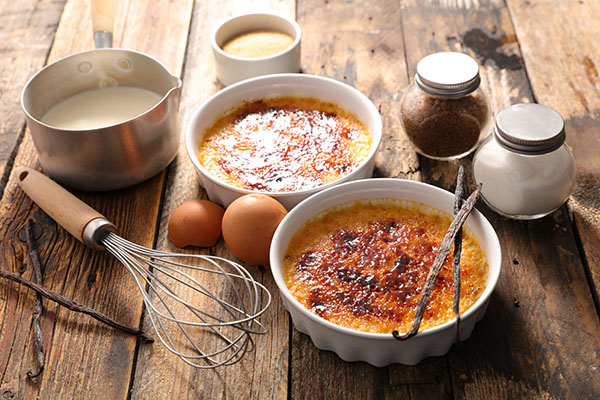

Créme Brûlée
What is a Créme Brûlée?
Créme Brûlée is a classic French dessert featuring a brittle, caramelized sugar top that contrasts with the rich, creamy vanilla custard beneath. Served in individual remekins, it offers a delightful balance of flavors and textures, with the slightly bitter caramel complementing the sweet custard. The experience combines the satisfying crack of the caramel with the smooth, cool custard, often garnished elegantly with fresh berries or mint.
Ingredients
- 3 large egg yolks
- ¼ cup white sugar
- 1 teaspoon vanilla extract
- 1 cup heavy cream
- 2 tablespoons white sugar
- 1 tablespoon brown sugar
Steps
- Preheat the oven to 300°F (150°C). Move an oven rack to the lowest position.
- Whisk egg yolks, ¼ white sugar, and vanilla together in a stainless steel bowl until smooth. Bring cream just to a simmer in a saucepan over medium-low heat; pour into egg yolk mixture, whisking continuously until combined.
- Bring a couple of inches of water to a simmer in an oven-safe saucepan over medium-low heat; set the bowl with cream mixture over the saucepan to form a double boiler.
- Place the entire double boiler into the preheated oven; bake until mixture sets, about 30 minutes.
- Chill in the refrigerator for 2 hours.
- Preheat the oven's broiler and set the oven rack about 6 inches from the heat source.
- Combine 2 tablespoons white sugar and brown sugar in a small bowl; sprinkle evenly over cold crème.
- Heat under the preheated broiler until sugar melts and browns, 2 to 3 minutes; return immediately to the refrigerator and chill until sugar is set, about 15 minutes.